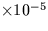
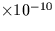

Approximate heliocentric position and velocity of the Earth
(single precision).
CALL:
CALL sla_EARTH (IY, ID, FD, PV)
GIVEN:
IY
I
year
ID
I
day in year (1 = Jan 1st)
FD
R
fraction of day
RETURNED:
PV
R(6)
Earth (AU, AU s-1)
NOTES:
1.
The date and time is TDB (loosely ET) in a Julian calendar
which has been aligned to the ordinary Gregorian
calendar for the interval 1900 March 1 to 2100 February 28.
The year and day can be obtained by calling sla_CALYD or
sla_CLYD.
2.
The Earth heliocentric 6-vector is referred to the
FK4 mean equator and equinox of date.
3.
Maximum/RMS errors 1950-2050:
13/5  AU = 19200/7600 km in position
47/26  AU s-1 =
0.0070/0.0039 km s-1 in speed
4.
More accurate results are obtainable with the routine sla_EVP.